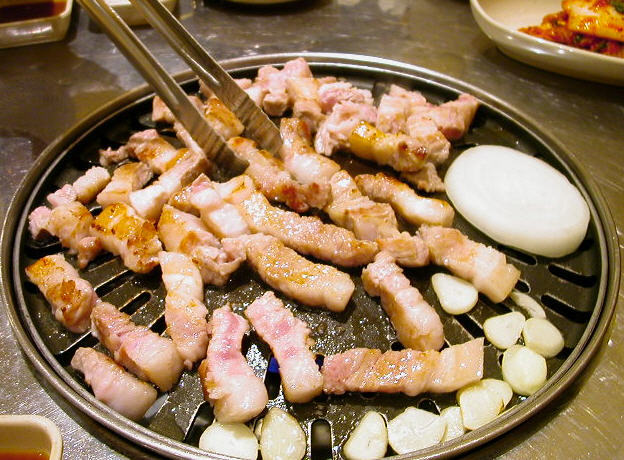
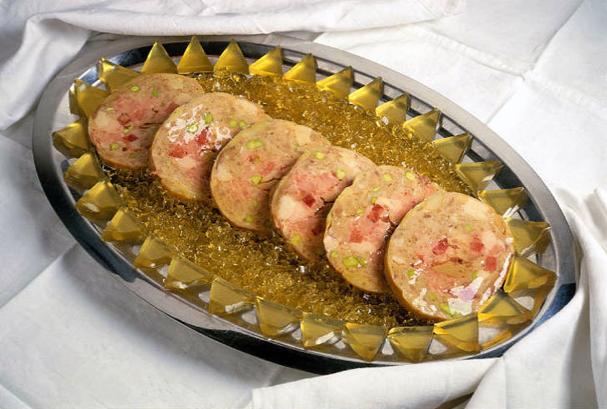
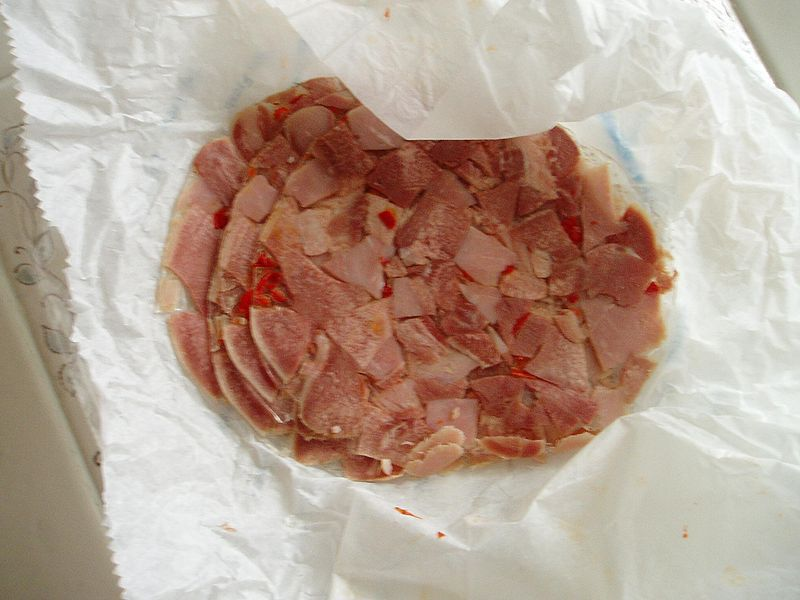
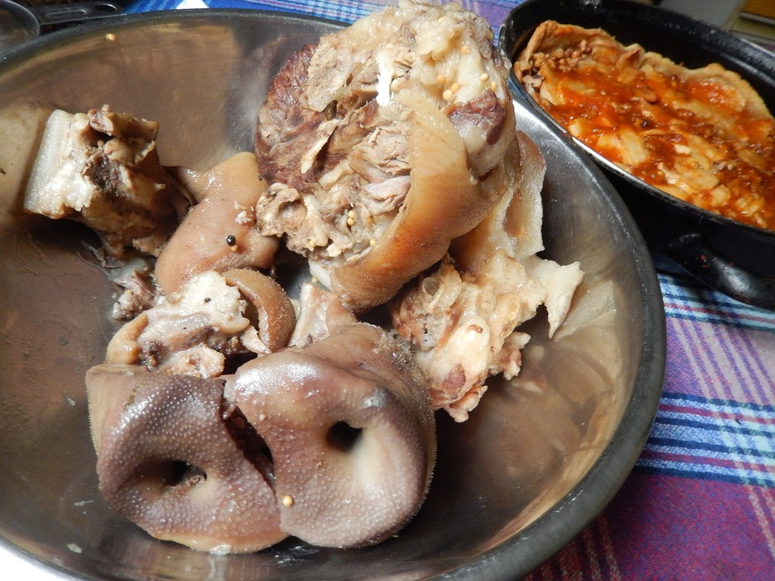
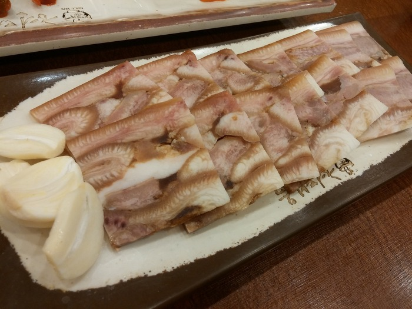
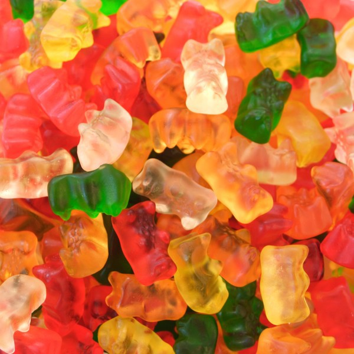
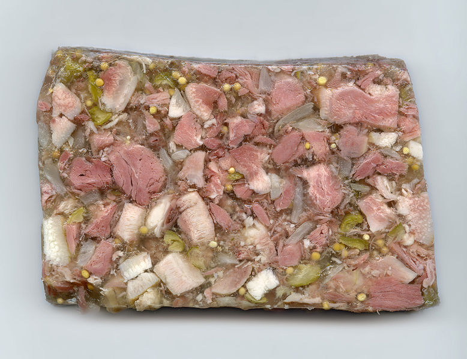
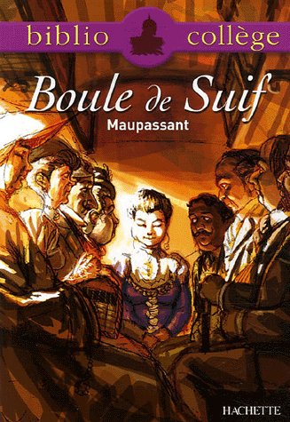
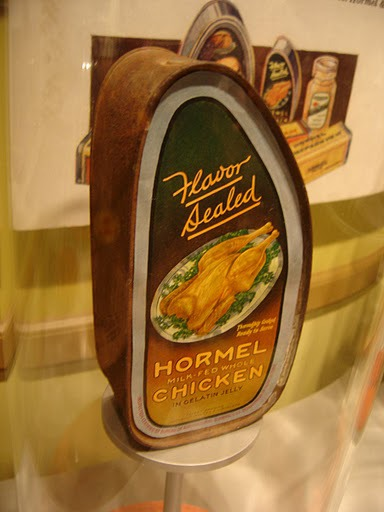

육류 요리의 정점, 젤라틴 이야기
게시: 2018-10-18T06:30:00+09:00
저는 세상에서 제일 쉬운 요리가 고기 요리라고 생각합니다. 특히 서양 고기 요리가 그런 것 같습니다. 물론 그쪽 방면에 종사하시는 분들은 그런 생각에 절대 동의하지 않으시겠만요. 가령 삼겹살이나 생갈비, 스테이크 같은 것들은 그냥 고기를 불에 굽는 것이쟎습니까 ? 솔직히 '고기는 저 식당이 맛있다'라는 이야기는 납득이 가지 않습니다. 맛에 차이가 있다면 그건 재료의 차이겠지요. 그냥 날고기를, 그것도 손님들이 직접 구워 먹는데 무슨 요리 솜씨가 필요하겠습니까 ?

(이게 요리라면 국민 모두가 일류 요리사...)
물론 고기를 어떻게 자르느냐 하는 것도 요리라고 하면 이야기가 좀 달라지긴 합니다. 가령 생선회같은 경우는 아예 불에 굽거나 삶는 과정조차 없으니까요. 하지만 저는 생선회는 사실 진정한 의미에서는 요리가 아니라고 생각합니다. (그냥 제 개인적인 생각일 뿐입니다. 생선초밥은 예외...)
확실한 것은 고기 요리가 나물이나 해산물로 만드는 요리에 비하면 쉬워 보인다는 것입니다. 하다못해 (역시 요리라고는 생각되지 않는) 샐러드를 만들 때도, 채소를 깨끗이 씻어야 하는 것이 꽤 귀찮은 일입니다만, 삼겹살이나 스테이크는 씻는 과정조차 없쟎습니까 ? 불고기처럼 양념장에 재워서 각종 채소와 함께 익혀먹는 요리는 물론 손이 많이 가는 요리이지요. 하지만 서양 고기 요리는 그렇게 복잡한 조리 과정이 별로 없어 보입니다.
하지만 고기 요리라고, 특히 제게 멸시받는 서양 고기 요리라고 다 간단한 것만은 아닙니다. 아주 손이 많이 가는 요리도 있습니다.
Sharpe's Regiment by Bernard Cornwell (배경: 1814년 영국) ----------
그 꾸러미는 낡은 검은색 망토로 싸여 있었다. 안에는 기름 종이로 포장된, 희미한 색깔의 부슬부슬 부서지는 치즈 덩어리 큰 것 하나와, 반 덩어리의 빵, 그리고 따로 기름 종이로 더 싼 이상한 젤리가 입혀진 고기 덩어리가 들어 있었다.
"이게 뭐죠 ?" 하퍼는 고기를 쳐다 보았다.
"모르겠는데." 샤프는 파울니스의 경비병에게서 빼앗은 총검으로 그것을 잘라 조금 먹어보았다. "더럽게 맛있구만 !"
치즈 옆에는 가죽 지갑이 있었는데, 열어보니, 꾸러미를 준비해준 그녀에게 정말 고맙게도, 금화 3기니가 들어 있었다.
(이 이상한 고기의 정체는 무엇일까요 ? 다음날 밤 런던의 유명한 티-가든(tea-garen)인 복스홀 (Vaux-Hall) 가든에서 알려집니다.)
그는 그것을 테이블에 올려 놓았다. 잠시 후, 웨이터가 샴페인과 약간의 빵, 그리고 제인 기본스가 바로 전날 밤에 주었던 것과 똑같은 이상한 젤리가 입혀진 고기 덩어리를 가져왔다. 이제 느껴지기로는 어제 밤이 한달 전의 일 같았다.
"이게 뭡니까 ?"
그녀는 그의 무식함에 미소를 지었다. "갤런틴(galantine)이에요. 내가 당신의 일을 어찌 그리 잘 아는지는 궁금하지 않으세요 ?"
----------------------------------------------------------------------

(갤런틴은 주로 이렇게 예쁘게 잘라내어 차가운 상태로 서빙됩니다.)
이 소설 속의 샤프 소령은 런던 극빈층 출신인지라, 갤런틴이라는 요리는 처음 본 것이 무리가 아닙니다. 원래 갤런틴(galatine)은 프랑스 요리거든요. 이 갤런틴이라는 요리는 소나 돼지, 닭 또는 사냥한 새의 고기에서 뼈를 발라내어 각종 허브 및 양념과 함께 삶은 뒤, 삶는 과정에서 흘러나온, 또는 별도로 추가한 젤라틴(gelatin)으로 굳혀서 만든 것입니다. 원래 뼈와 고기를 삶으면 기름도 나오지만, 그 중 일부는 젤라틴 성분이라서 식으면 굳쟎습니까 ? 뼈를 발라내느라고 부서진 고기 조각들을 젤라틴 성분으로 뭉쳐 눌러서 원통형 덩어리로 만들고, 그렇게 만들어진 차가운 덩어리를 얇게 썰어 내놓는 것이 바로 갤런틴입니다.
이 요리는 '서양 고기 요리'치고는 상당히 복잡한 요리 과정을 거치는 지라, 꽤 고급 요리로 인식되고, 또 그 모양도 예쁘장하기 때문에 우아하다는 뜻의 galant라는 이름이 붙었습니다. 그러나 어디까지나 차가운 고기 요리라서, 정찬은 아니고, 주로 애피타이저 용도로 내놓는다고 합니다.
이와 비슷한 요리로서, brawn이라는 것이 있습니다.
Hornblower and the Hotspur by C.S. Forester (배경: 1803년 프랑스 앞바다의 영국 함대) ---
(19세기초반, 나폴레옹 전쟁 당시 프랑스 브레스트 지역 앞바다에서 프랑스 항구의 봉쇄 임무를 지루하게 수행하던 영국군 함대의 함장들이 펠류 함장의 기함에 오랜만에 모여 펠류가 제공하는 오찬을 같이 하게 됩니다. 악명높기로 유명한 영국 해군의 식사지만, 그래도 제독과 함장들이 모이는 특별한 경우라서 상당히 호화스런 요리가 제공됩니다.)
쇠고기 스테이크 파이는 모두들 먹고 싶어하는 지라, 이제 남은 양이 거의 없었다. 게다가 혼블로워는 하급 장교로서, 제독들과 함장들이 그 파이를 좀더 먹고 싶어할 수도 있다는 것을 고려해야 했다. 그리고 양파가 많이 들어간 돼지고기 스튜는 식탁 저 멀리에 놓여있었다.
"저는 이걸로 시작하겠습니다." 그는 아무도 손대지 않은, 자기 앞의 접시를 가리켰다.
"혼블로워의 판단력은 우리 모두를 부끄럽게 만드는군요." 펠류가 말했다. "그 요리가 바로 내 요리사가 특별히 자랑하는 진미입니다. 그것과 함께 이 감자 퓨레가 필요할 걸세, 혼블로워."
그건 brawn이었는데, 혼블로워는 그것을 넉넉하게 잘라내어 자기 접시에 옮겼다. 그 안에는 뭔가 거무스름한 조각들이 박혀있었다. 그 맛은 정말 일품이었다. 그는 그의 상식을 긁어본 결과, 그 거무스름한 조각들이 들어보기만 하고 먹어본 적은 없는, 송로버섯(truffle)임에 틀림없다고 생각했다.
----------------------------------------------------------------------------------

(헤드치즈는 치즈가 아닙니다. 그러나 머리에서 나오는 것은 맞습니다.)
Brawn이라는 단어를 사전에서 찾아보면 그냥 헤드치즈(head cheese)라고 나옵니다. 이 헤드치즈라는 요리는, 돼지나 송아지의 머리나 다리를 푹 삶아서 역시 자체에서 흘러나오는 젤라틴으로 굳힌 식품입니다. 원래 머리나 다리 부분에서 젤라틴이 많이 나오니까, 특히 그 부분을 재료로 많이 이용했지요.
하지만 프랑스의 갤런틴과는 달리, 이 요리는 가축의 머리나 다리 관절 등과 같은 싸구려 재료를 써서 요리한 것이기 때문에, 그다지 고급 요리로 취급되지는 못했습니다.
(이 사진은 미국에 이주한 스웨덴 사람들이 헤드치즈를 만드는 장면을 리인액트한 것이라고 하네요. 이렇게 헤드치즈는 서민층의 음식이었습니다.)
역시 나폴레옹 시대의 영국 해군 장교의 모험담을 그린 패트릭 오브라이언의 명작 해양 소설인 Aubrey-Maturin 시리즈에서도, 이와 비슷한 요리 이야기가 나옵니다. 그 주인공인 영국 해군 함장 잭 오브리(Jack Aubrey)가 가장 좋아하는 요리가 'soused pig's face'라고 되어 있지요. souse라는 단어는 소금이나 간수에 절이는 것을 뜻합니다. 즉 돼지머리를 삶아 소금 및 식초에 절인 뒤 눌러 놓았다가, 얇게 썰어낸 음식이 바로 soused pig's face입니다.

(이건 헝가리에 사는 분이 거기 시장에서는 돼지머리를 많이 판다며 올린 사진인데... 거기 돼지고기는 미국 등에서 먹은 것과는 비교가 되지 않는다고 합니다. 출처는 http://horinca.blogspot.com/2014/05/ )
이렇게 설명하니까 '어라, 어디서 많이 듣던 요리 방식이다'라는 생각이 들으실 겁니다. 그렇지요, 바로 우리나라의 돼지머리 누른 것, 즉 편육과 거의 비슷한 요리 방식입니다.

(이거 가격이 싼 거 맞지요 ? 기쁜 곳(잔치집)이나 슬픈 곳(초상집)이나 공통적으로 나오는 음식입니다.)
네이버 지식인을 뒤져 보니 이렇게 나오더군요.
"고기를 푹 고아서 물기를 뺀 것이 수육 또는 숙육이고 고아서 얇게 저민것은 편육 또는 숙편이다.
쇠고기나 돼지고기를 덩어리째 삶아 베보에 싸서 도마로 판판하게 눌러서 얇게 저며 양념장이나 새우젓국을 찍어 먹는다.
이용기는 [조선무쌍신식요리제법]에서 편육이란 것은 약을 달여 약은 버리고 찌꺼기만 먹는셈이니 좋은 고기맛은 다 빠졌는데 무엇이 그리 맛이 있으며 자양인들 되리요 하여 편육의 조리법을 그리 달갑지않게 여기고 있다. 하지만 우리 나라 사람이 여전히 좋아하는 음식이고 요즘은 돼지고기 편육을 절인 배추에 싸서 보쌈으로 즐겨 먹는다."
출처 : http://kin.naver.com/qna/detail.nhn?d1id=8&dirId=8020110&docId=30855896&qb=7KGx7Y64IOyXreyCrA==&enc=utf8§ion=kin&rank=8&sort=0&spq=0
저도 어렸을 때 외가댁에서 잔치할 때, 이런저런 돼지고기를 삶아서 무거운 돌로 눌러 놓은 것을 본 기억이 납니다. 그때 기억에 남았던 것이, 그 눌러놓은 것을 마당의 하수구 근처에 두었는데, 그 이유가 바로 흘러나오는 기름 때문이었습니다. 굉장히 무거운 돌로 눌러놓으니까, 고기를 싸놓은 천에서 허연 지방질이 조금씩 흘러내려 마치 우유를 쏟아놓은 것 같은 모습이 되더라고요.

(우리 애도 한때 즐겨먹던 Gummy Bears도 주성분은 돼지에서 추출한 젤라틴입니다.)
이런 편육류의 요리는 사실 고기를 상당히 많이 먹는 나라에서나 발전할 수 있는, 고도로 발달된 고기 요리 방법입니다. 제가 부끄러운 줄도 모르고 마구 표절을 해대는 위키피디아에 따르면, 이 헤드치즈라는 편육류의 요리는 원래 유럽 계열의 요리라고 되어 있습니다. 아시아에서는 중국(얘들이 못해먹는 것이 뭐 있겠습니까...)과 베트남, 그리고 우리나라만 편육류의 요리가 있다고 되어 있더군요.

(고기를 가공하는 거라면 독일 애들이 빠질 수 없지요. 독일식 헤드치즈인 Sulze.)
사실 우리나라는 역사적으로 육류를 많이 먹는 나라는 전혀 아니지 않았습니까 ? 그런 우리나라가 편육류와 같은 고도의 고기 요리를 가지게 된 것은, 돼지머리와 같은 '쓸데없는' 부위까지도 낱낱이 긁어먹어야 하는 가난함 때문에 비롯된 것이 아닌가 해서 약간 씁쓸하기는 합니다. 하지만 그 유래야 어쨌건 간에, 우리 조상들 덕택에 오늘날 우리도 싸고 맛있는 요리를 먹을 수 있다는 사실에는 변함이 없습니다.
이야기를 마치기 전에, 갤런틴이든 헤드치즈든 편육이든, 그 주된 성분인 육류의 젤라틴과 관계된 문학 작품 하나만 더 소개하지요.

BOULE DE SUIF (비계 덩어리), 모파상 작 (배경: 1870년 보불 전쟁 당시 프랑스) -----
(비스마르크의 프러시아군이 프랑스를 침공하자, 루앙(Rouen)시의 몇몇 중산층 시민들은 합승 마차를 타고 피난을 떠나기로 합니다. 이 합승 마차에는 유흥업에 종사하는 여인인, '비계 덩어리'라는 여인이 함께 탔는데, 점잖은 시민들은 이런 여자와 같은 마차를 탄 것을 몹시 불쾌해 합니다. 그러나 피난 길을 급히 떠나다 보니, 먹을 것을 준비해 온 사람은 이 '비계 덩어리' 뿐이라는 것이 밝혀집니다.)
바구니로부터, 그녀는 먼저 작은 질그릇과 은제 컵을 꺼내고나서는, 젤리(jelly,젤라틴)으로 코팅된 조각낸 닭 두마리를 담은 엄청나게 큰 접시를 꺼내었다. 바구니 안에는 다른 맛있는 것들도 많았다. 파이며, 과일같은 온갖 종류의 섬세한 음식들이 3일치 정도 준비되어 있어서, 그 바구니를 가진 사람은 길가의 여인숙에 굳이 의존하지 않아도 될 정도였다.
-----------------------------------------------------------------------------
이 이야기는 점잖은 척 하는 사람들의 위선과 배은망덕을, 한 바구니의 음식을 통해 풍자한 모파상의 대표작 중 하나입니다. 아직 안 읽어보셨으면 읽어보십시요. 짧고도, 아주 재미있습니다.

(광고를 보니 "Flavor Sealed Hormel Milk-Fed Whole Chicken in Gelatin Jelly"라고 되어 있네요. 우유를 먹여 키운 닭을 젤라틴 젤리에 굳혀서 포장한 모양입니다... 그런데 닭도 우유를 먹나요 ???)
저는 저 위 구절에서 궁금했던 것이, 닭고기를 왜 젤라틴으로 코팅을 해놓았을까 하는 것입니다. 물론 보기 좋게 하려는 것도 목적이겠습니다만, 다른 목적도 있다고 합니다. 바로 육류의 보존입니다. 저렇게 여행을 떠난다든지 하여, 조리된 고기를 다소 오래 보관해야 할 경우, 저렇게 젤라틴으로 코팅을 해놓으면 공기 중의 산소로부터 고기를 '절연'할 수 있기 때문에, 좀더 오래 상하지 않도록 보존이 가능했습니다. 다만, 저 젤라틴 자체도 단백질인데, 저 젤라틴은 상하지 않았을까 궁금하네요. 먹을 때는 긁어내고 먹었을까요 ?